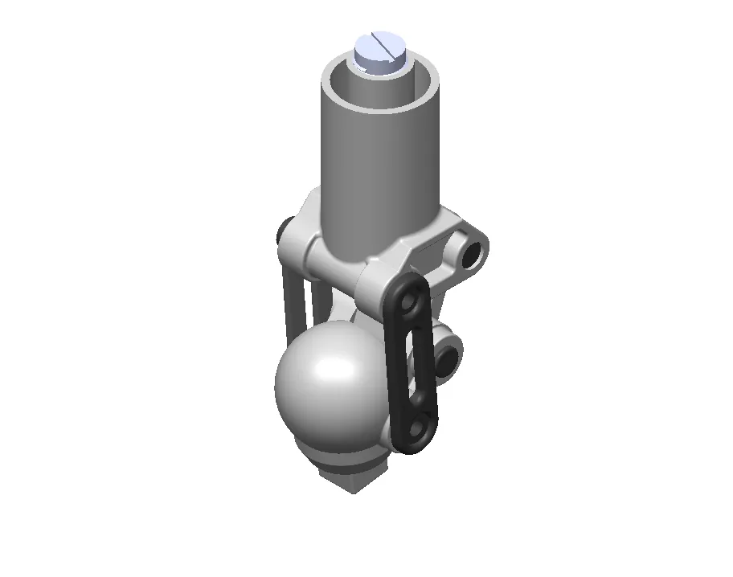
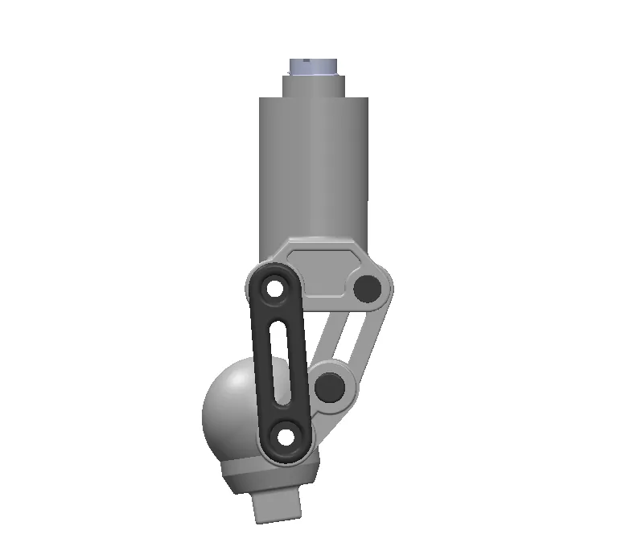
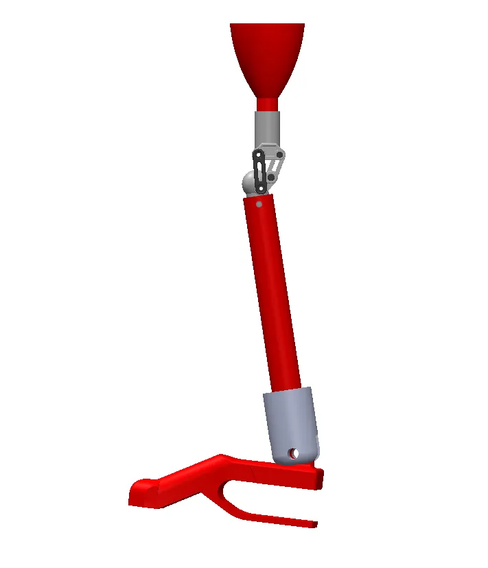
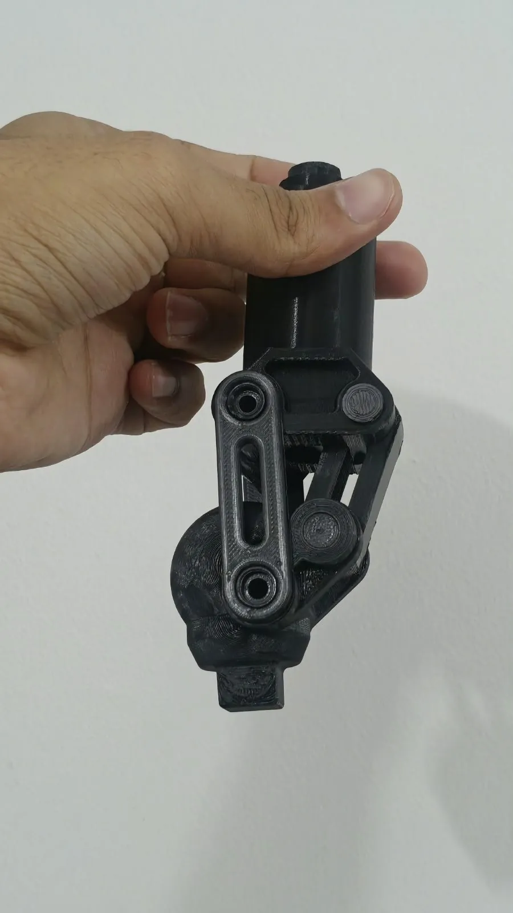
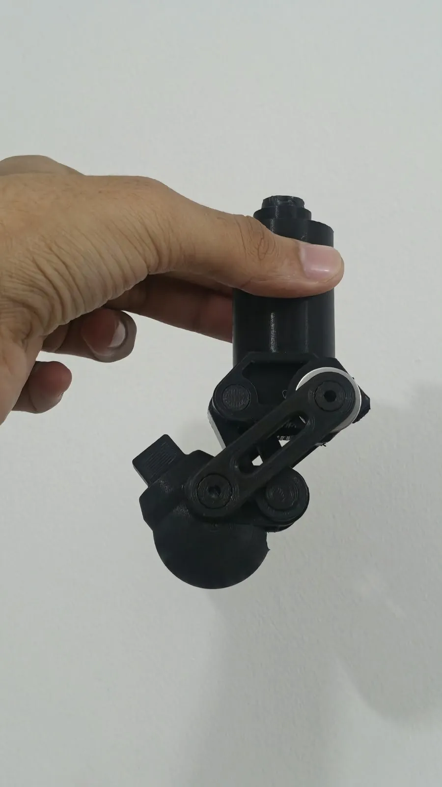
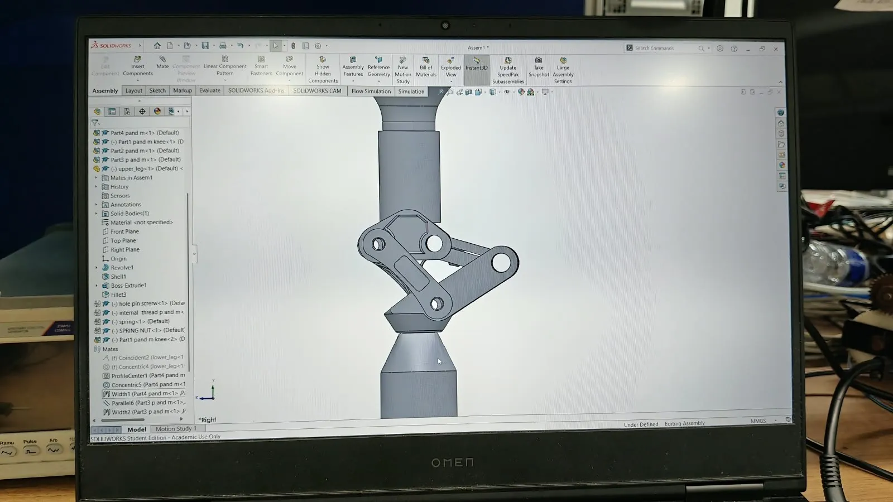

Checking a patented elbow implant, and freeing a knee that jammed
Two mechanism problems at mPragati. Both were in the geometry, and both showed up in simulation before anything was cut.
- With
- Dr. Dinesh Kalyanasundaram (supervisor); Bavath D. and Yogesh Sahu (mentors)
- My part
- CAD of the implant and its test jig, the multi-body dynamics, both redesigns
- Tools
- SolidWorks (parts and assemblies), ANSYS Mechanical (multi-body dynamics, static structural)
- Status
- Knee fixed and printed; hinge redesign under way
This page is a piano roll. Its keys run down the left edge: click one, or click the paper to punch a note. Scrolling plays it.

The elbow implant: a review before technology transfer
A patented elbow implant was being reviewed before its technology transfer. My job was to check that it moves the way it is meant to.
- Modelled the implant and its test jig as SolidWorks parts and assemblies.
- Ran multi-body dynamics in ANSYS Mechanical and compared the ulna’s path about the hinge with the motion the patent claims.
- Found a mismatch between the simulated motion of the ulna about the hinge and the motion it was meant to have.
- Started the kinematic redesign of the hinge.
The implant’s images stay with the lab while it is under review.
The prosthetic knee: removing a kinematic lock
A polycentric knee joins thigh and shin with two links instead of a single pin, so the four of them form a four-bar linkage. This one jammed part-way through its range: no link could turn far enough, and the linkage locked.
Whether a four-bar can turn all the way round depends only on its link lengths. With the shortest link s, the longest l, and the other two p and q, the Grashof condition is
s + l ≤ p + q
If it holds, the shortest link can make a full turn. If it doesn’t, every link only rocks between two dead positions, and at each one the linkage locks. I re-sized the link lengths in SolidWorks, as parts and as an assembly, until the inequality held. That removed the lock and gave the knee back its full range of flexion. Then I printed it and checked it on the physical prototype.






What it taught me
Simulate before you trust a mechanism, even a patented one.